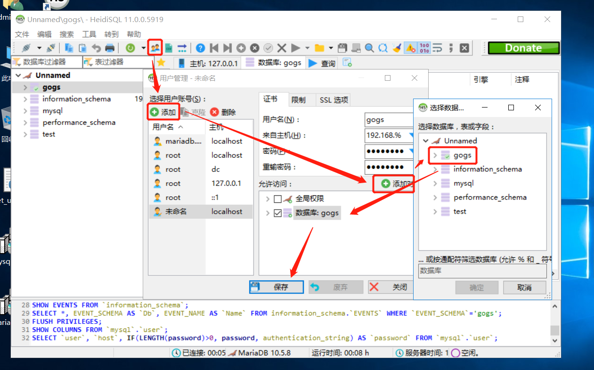

Gogs
Gogs 是一款轻量级的私有Git 服务器。满足一般开发需要，且安装部署比较方便。这里记录其作为Windows 服务部署的过程。
安装Gogs
以Gogs + MariaDB 为例。优先采用内置SSH 服务端，微软自带的SSH 服务端会要求验证用户身份。
安装MariaDB
MariaDB 兼容MySQL
- 下载安装包
- 设置以
UTF-8作为默认字符集 - 设置密码，并保持默认直到结束
安装过程会自动安装一个数据库管理工具HeidiSQL，也是在Windows 下一款非常好用的数据库管理工具。
配置MariaDB
通过HeidiSQL 连接本地数据库
- 创建数据库
gogs
/* 创建数据库 */
CREATE DATABASE `gogs` /*!40100 COLLATE 'utf8_general_ci' */
/* 创建用户
* 可以从192.168.% 网段远程访问
* 如果gogs 服务也托管在数据库服务器上，也不用设置远程登录，相对来说更安全
* 并赋予操作gogs 数据库的权限
*/
CREATE USER 'gogs'@'192.168.%' IDENTIFIED BY 'password';
GRANT USAGE ON *.* TO 'gogs'@'192.168.%';
GRANT EXECUTE, SELECT, SHOW VIEW, ALTER, ALTER ROUTINE, CREATE, CREATE ROUTINE, CREATE TEMPORARY TABLES, CREATE VIEW, DELETE, DROP, EVENT, INDEX, INSERT, REFERENCES, TRIGGER, UPDATE, LOCK TABLES ON `gogs`.* TO 'gogs'@'192.168.%' WITH GRANT OPTION;
FLUSH PRIVILEGES;
SHOW GRANTS FOR 'gogs'@'192.168.%';
安装Git 客户端
直接从Git 官网下载，保持默认安装即可
注册Gogs 服务
下载并解压安装包到C:\gogs，或者其他目录。注意文件名带有_mws 表示提供Windows 服务支持。
# 注册服务
sc create gogs start= auto binPath= "\"C:\gogs\gogs.exe\" web --config \"C:\gogs\custom\conf\app.ini\""
# 启动服务
net start gogs
# 删除服务，一般不会用到
# sc delete gogs在启动服务后，登录http://{ip}:3000 即可进入初始配置界面。详细配置见下文，记得选择使用内置的SSH 服务器即可。
在配置完成后重启下服务。
net stop gogs
net start gogs至此，安装完成。
较为完整的配置文件
注意，在此之前，请首先阅读Gogs 的配置文档。
完整的配置文件请参见Github
BRAND_NAME = Gogs
RUN_USER = git ; 主机名，但如果采用内置SSH 服务的话，写作git 即可
RUN_MODE = prod ; 生产模式
[database]
TYPE = mysql
HOST = 192.168.*.*:3306
NAME = gogs
USER = gogs
PASSWORD = password
SSL_MODE = disable
PATH = C:\gogs\data\gogs.db
[repository]
ROOT = C:/gogs/repos
[server]
DOMAIN = 192.168.*.*
HTTP_PORT = 3000
EXTERNAL_URL = http://192.168.*.*:3000/
DISABLE_SSH = false
SSH_PORT = 22
START_SSH_SERVER = true ; 启用内置SSH 服务器
OFFLINE_MODE = true ; 离线模式
[mailer]
ENABLED = true
HOST = mail.domain.com:port
FROM = "12Tall"<12tall@domain.com>
USER = 12tall@domain.com
PASSWD = password
[service]
REGISTER_EMAIL_CONFIRM = true
ENABLE_NOTIFY_MAIL = true
DISABLE_REGISTRATION = false
ENABLE_CAPTCHA = true
REQUIRE_SIGNIN_VIEW = false
[picture]
DISABLE_GRAVATAR = true
ENABLE_FEDERATED_AVATAR = false
[session]
PROVIDER = file
[log]
MODE = console, file
LEVEL = Info
ROOT_PATH = C:/gogs/log
[security]
INSTALL_LOCK = true
SECRET_KEY = ****************异常处理
ENV 环境变量
git clone git@192.168.227.110:ouyfb/test.git
# Cloning into 'test'...
# fatal: Could not read from remote repository.
# Please make sure you have the correct access rights
# and the repository exists.
# 找不到env 的路径，将`{Git 安装目录}\usr\bin` 添加到PATH 环境变量即可